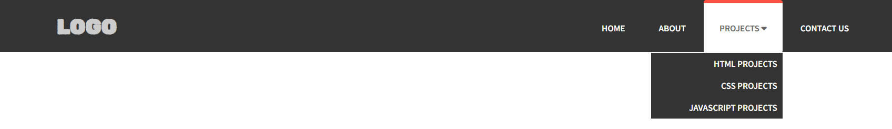
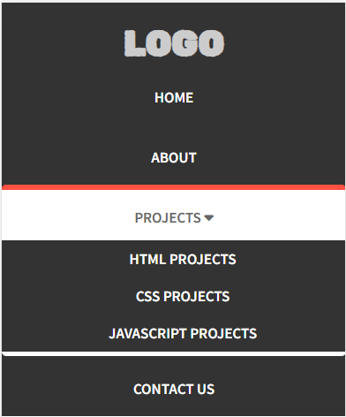

CSS Pseudo Classes
CSS Pseudo-classes are used to add special effects to some selectors.
List of pseudo-classes
- :link
- :visited
- :hover
- :active
- :focus
- :first-child
Examples:
:link, :visited, :hover, :active
a:link, a:visited { color: #f12457; } a:hover, a:active { color: #1245f7; }
:focus
input:focus { background: #000; color: #fff; border: 2px solid #fff; }
:first-child
div.paras p:first-child { color: #f87589; }
CSS Pseudo Elements
CSS Pseudo elements are used to add special effects to some selectors.
List of pseudo elements
- ::first-line
- ::first-letter
- ::before
- ::after
- ::selection
Examples:
::first-line
p::first-line { color: #ff0000; }
::first-letter
h1::first-letter { font-weight: bold; font-size: 25px; }
::before
ul li::before { content: url('tick.png'); }
::after
input::after { content: url('tick-circle.png'); }
::selection
::selection { background: #FF9989; color: #fff; }
CSS @ Rules
List of @ rules
- @import
- @font-face
- !important
- @media
Examples:
@import
@import "new_stylesheet.css"; OR @import url("new_stylesheet.css");
@font-face
@font-face { font-family: "Roboto"; src: url("https://fonts.google.com/Roboto.ttf"); } p { font-family: "Roboto"; }
!important
h1 { color: #f09890 !important; } h1 { color: #ff4254; }
@media
@media screen { body { background-color: #ff4254; } }
Other Media Types: all, screen, print, tv, etc..
CSS Transitions
CSS transitions allow to change property values smoothly, over a given duration.
List of transition properties:
- transition-property
- transition-delay
- transition-duration
- transition-timing-function
- transition (shorthand)
Examples
div { width: 100px; background: #f42574; transition-property: width; transition-delay: 2s; transition-timing-function: ease-in; } OR div { width: 100px; background: #f42574; transition: width 2s ease-in; }
CSS Transforms
CSS transforms allow to move, rotate, skew and scale elements. CSS can be used to transform elements as 2D and 3D.
List of 2D transform properties:
- translate(x, y)
- rotate(deg)
- skew(deg, deg)
- scale(n, n)
Examples
translate(x, y)
div { width: 100px; background: #f42574; transform: translate(50px, 100px); }
rotate(deg)
div { width: 100px; background: #f42574; transform: rotate(90deg); }
skew(deg, deg)
div { width: 100px; background: #f42574; transform: skew(50deg, 60deg); }
scale(n, n)
div { width: 100px; background: #f42574; transform: scale(2, 4); }
List of 3D transform properties:
- translate3d(x, y, z)
- rotate3d(x, y, z, deg)
- scale3d(n, n, n)
Examples
translate3d(x, y, z)
div { width: 100px; background: #f42574; transform: translate3d(50px, 100px, 150px); }
rotate3d(x, y, z, deg)
div { width: 100px; background: #f42574; transform: rotate(1, 2, 5, 50deg); }
scale3d()
div { width: 100px; background: #f42574; transform: scale3d(1, 2, 4); }
CSS Animations
CSS Animations are used to create animations of HTML elements.
List of animation properties
- @keyframes
- animation-name
- animation-duration
- animation-timing-function
- animation-delay
- animation-iteration-count
- animation-direction
- animation (shorthand)
@keyframes
@keyframes is used to define the animation styles to different properties.
Examples:
@keyframes changeColor { from { color: red; } to { color: yellow; } } @keyframes changeColor { 0% { color: red; } 25% { color: yellow; } 50% { color: purple; } 100% { color: blue; } }
animation-name
animation-name is used to define the name of the animation.
Examples:
@keyframes changeColor { from { color: red; } to { color: yellow; } } p { color: purple; animation-name: changeColor; }
animation-duration
animation-duration is used to define the duration of the animation.
Examples:
@keyframes changeColor { from { color: red; } to { color: yellow; } } p { color: purple; animation-name: changeColor; animation-duration: 4s; }
animation-timing-function
animation-timing-function is used to define the smoothness of the animation.
Examples:
@keyframes changeColor { from { color: red; } to { color: yellow; } } p { color: purple; animation-name: changeColor; animation-timing-function: ease; // linear, ease, ease-in, ease-out, ease-in-out and cubic-bezier(n, n, n, n) can also be used }
animation-delay
animation-delay is used to define the delay of the animation.
Examples:
@keyframes changeColor { from { color: red; } to { color: yellow; } } p { color: purple; animation-name: changeColor; animation-delay: 2s; }
animation-iteration-count
animation-iteration-count is used to define the number of times should run.
Examples:
@keyframes changeColor { from { color: red; } to { color: yellow; } } p { color: purple; animation-name: changeColor; animation-iteration-count: 5; // infinite can also be used }
animation-direction
animation-direction is used to define the define the direction of the animation.
Examples:
@keyframes changeColor { from { color: red; } to { color: yellow; } } p { color: purple; animation-name: changeColor; animation-direction: reverse; // normal, alternate, alternate-reverse can also be used }
animation
animation is used to define the properties of the animation in a single property.
Examples:
@keyframes changeColor { from { color: red; } to { color: yellow; } } p { color: purple; animation: changeColor 5s linear 2s infinite alternate; }
Order for animation: animation-name, animation-duration, animation-timing-function, animation-delay, animation-iteration-count, animation-direction
CSS Responsiveness
@media rule:
@media can be used to include one or more CSS properties for different breakpoints and conditions.
Examples:
h2 { font-size: 40px; } @media screen and (max-width: 768px) { h2 { font-size: 25px; } }
Exercise
Create a responsive navbar like below:
 